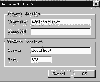
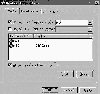

|
|
| 当前位置：电脑报电子版 > 1999 年 > 49 期 > 大众网络 > Wingate 3.02全攻略 |
| 《 Wingate 3.02全攻略 》 |
| 大家知道，在局域网上，将一台机器作为服务器，并安装上一种服务器软件，其他的机器就可以作为客户机共享那台机器的Modem，实现多台机器共同浏览Internet。 那台作为服务器的机器叫做代理服务器，它上面安装的服务软件就叫做代理软件。代理软件有许多， 其中Qbik公司出品的Wingate代理服务器软件，是比较优秀的一款。它功能强大，设置齐全，能最大地满足各种条件的要求。下面，就Wingate 3.02版本的一些使用技巧和心得体会，与大家一起切磋探讨。
入门篇 一、安装和启动 网上许多个人主页都有Wingate软件可供下载。 比如，你可以到电脑之家去下载一份，网址是http://see.online.sh.cn/ch/sw/dl/。将Wingate下载到作为代理服务器的机器上后，直接双击下载的EXE文件，就可以进行安装。安装过程是step by step形式的，可以按默认值一直进行到底。须要注意的是:作为代理服务器的机器最好具有固定IP地址。安装成功后，Wingate会自动启动，并且每次Windows启动时，Wingate都将自动运行。二、Wingate程序组  在“开始/程序”中，我们将看到Wingate程序组中罗列了各有关程序项目。其中，GateKeeper程序用于对Wingate进行各种配置；Start WinGate Engine用于启动代理服务；Stop WinGate Engine用于停止代理服务。GateKeeper是最重要的一项，代理服务的各项细微的配置，都要通过它进行。1初次启动GateKeeper 当安装完Wingate后，初次启动GateKeeper，会出现一个登录窗口(图1)。 第一次进入，没有密码，确认后，系统要求输入管理员Administrator的新密码。以后再启动GateKeeper，就要输入新密码才能进入。 2GateKeeper用户界面 进入GateKeeper，界面分左右两栏，右边是当前活动记录，显示了当前有谁在连接、有多少用户在连接、用户在访问哪些URL等等，左边是各种设置项，包括三个功能页面，分别是“System”、“Services”、“Users”。 3主要设置项目功能(见下表)
4进行拨号网络的基本设置 高级篇 上面的设置只是基本功能，有时，我们可能有更多的要求，比如：只允许部分客户机共享Modem上网、只允许在特定的时间上网、定时地进行各种任务、远程进行修改配置等等，为实现这些功能，就须要更深一步的设置。所有这些高级设置，都是在启动GateKeeper后进行的。一、设置允许特定的机器共享Modem上网 1添加用户与组首先，设置允许访问的用户或组。 设定组可以简化设置，具有同一权限的用户，归为一组。在GateKeeper窗口中选择User页面，右键单击“Users”，选择“New user”，出现用户设置窗口，输入用户名称与密码，单击“OK”，即可添加一个新用户。 2将用户与客户机IP地址进行对应设置 为了限定访问代理服务器的机器，须要将客户机的IP地址与Wingate中建立的用户进行对应设置。同一个用户，可以分别对应多个IP地址。在User页面，双击“Assume users”项，出现设置窗口。 单击“Add”，进行用户名与IP地址的对应设置。如果启动了DHCP服务，并被客户机采用，那么还可以进行客户机BIOS名字与用户的对应设置。 二、设定服务的用户权限 在Wingate的各个项目中，都可以针对不同用户设定具体的权限，这些权限包括“时间权限”、“访问地址权限”等等。比如，对于WWW服务，双击Services页面的“WWW Proxy server”项目，选择“Policies”页面，出现权限设置窗口：Default rights表示这里设定的权限与系统默认权限的逻辑关系，有三种选择: 1may be used instead:表示用户的实际权限等于此处设定的权限与系统默认权限进行“或”操作后的结果。 2are ignored:表示用户的实际权限就等于此处设定的权限，忽略系统默认权限。 3must also be granted:表示用户的实际权限等于此处设定的权限与系统默认权限进行“与”操作后的结果。 三、单击“Add”添加一个用户 用户的识别可以有三种方式：1任意方式(User may be unknown):这是默认设定； 2用户设定方式(User must be assume):选中此项表示只有通过IP地址或机器名对应的用户才能登录； 3口令验证方式(User must be authentica):表示用户登录时，要在出现的登录窗口中输入正确的用户名与口令后方可登录。 当选中此项时，在WWW服务的General页中，必须选中“Open java…”项目；在Time页面可以对访问时间进行控制；在Ban－list页面，可以对访问的页面进行禁止或许可控制；在Advance页面，还可以进行更细致的控制，比如，设定只允许特定网卡地址的机器进行访问，以防止IP地址欺骗。 四、远程修改配置 Winagte允许远程修改服务器的配置，方法如下:1在System页面双击“Remote Control Service”项目，出现“Remote Control Service Properties”窗口，选中第一个Radio按钮“Allow connections coming in on any internet connections will be…”。 2将服务器上Wingate所在目录中的GateKeeper.exe拷贝到远程机器并执行，在Server处输入Wingate服务器地址和Administrator的口令，进入GateKeeper界面，就可以像本地操作一样进行维护了。  五、定时操作 Wingate提供了类似于Windows计划任务的功能，允许在特定时间自动完成某些工作。双击System页面的“Scheduler”项目，出现“Scheduler Properties”窗口，单击“Add”，添加任务，在“Descript”处输入任务描述名称，选择“Event Enabled”，使它生效，在“When event should occur”中选择任务执行的周期与时间，如果只执行一次的任务，选择“Single occurence”并输入时间，在“Actions”中单击“Add”添加可以执行的任务。这些任务包括:停止/启动服务、挂断/启动拨号、输出用户记账文件、执行命令行程序等等。六、拨号权限控制 有时候，我们希望某些客户机能启动代理服务器拨号，其他客户机只能在服务器上网了才能浏览，这时，就需要进行拨号权限的设置。双击System页面的“Dialer”项目，双击当前的拨号连接，在出现的“Properties for…”窗口中，就可以进行设置了(与设定WWW服务权限一样)。七、系统策略 在系统策略窗口中，可以设定系统服务的默认访问权限。(河北 甘冀平 gwok@yeah.net) |
| 下载本期推荐软件 | 页 首 |
| CPCW网站版权所有，电脑报网站编辑部设计制作发布 |